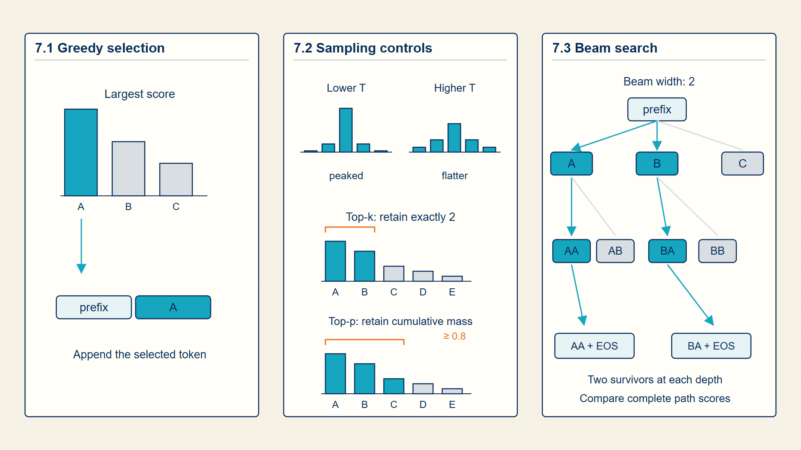
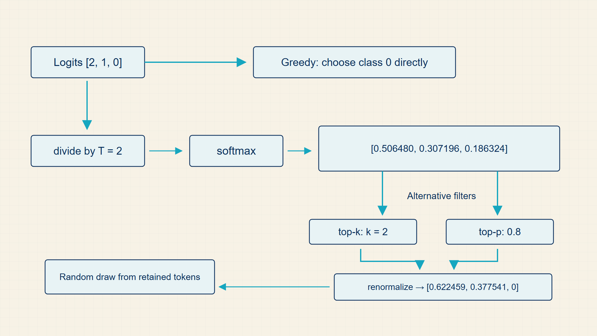

7 Decoding Strategies: Generating Text Token by Token
A next-token model returns probabilities for many possible continuations. Generation needs an additional rule that selects one token and repeats the process.
A next-token distribution still leaves one decision to make: which token to emit. Greedy decoding, sampling, truncation, and beam search apply different selection rules to the same probability model.
In code, torch.topk and torch.multinomial expose candidate filtering and sampling; transformers.GenerationConfig and generate apply the same choices to pretrained models.

7.1 Deterministic Next-Token Selection with Greedy Argmax
An inference decision turns a trained model’s probability distribution into a usable class prediction or next token.
- Vocabulary distribution: The softmax-normalized probabilities over all token IDs.
- Decoder step: One forward computation that produces the next-token logits for the current context.
A classifier usually performs one forward pass and selects a class with a threshold or argmax rule. An autoregressive language model performs the same probability computation repeatedly, selecting one token and then using that token as part of the next context.
The same model can produce deterministic or diverse outputs depending on decoding settings. These settings are inference-time choices, not changes to the trained parameters.
Logits and probability filtering are shared by many model families. Any classifier or language model that outputs a probability vector must apply a decision rule before it produces an observable prediction.
A decoding rule changes the selected output, whereas a serving optimization changes how the same logits are computed or reused. KV caching, batching, and prefix reuse therefore leave the probability distribution mathematically unchanged.
Token distribution:
\[ P(\mathrm{next}=i\mid\mathrm{context})=\operatorname{softmax}(\mathrm{logits})_i \tag{7.1}\]
where i is candidate token index; context is tokens already observed; logits is model scores for candidate tokens.
Softmax converts the vocabulary logits into the categorical distribution used for selection.
Decoding operates on this distribution; it does not change the model weights.
Example: Token distribution
For probabilities (0.6,0.3,0.1), greedy selection returns candidate 1.
Greedy decoding is fast because it selects the largest probability at each step, but it does not explore alternatives. Sampling changes the selection rule while keeping the model probabilities fixed.
7.2 Controlling Sampling Diversity with Temperature and Truncation
A decoding rule selects the next token from the model’s distribution. The rule changes output diversity, repetition, and reliability.
- Greedy decoding: Always choose the highest-probability token.
- Temperature: A divisor on logits before softmax; lower values sharpen, higher values flatten.
- Top-k sampling: Sample only from the k highest-probability tokens.
- Top-p sampling: Sample from the smallest token set whose cumulative probability exceeds p.
Greedy decoding is stable but can be dull or trapped in repetitive continuations. Temperature and truncation sampling expose controlled randomness.
Top-p is adaptive: it may keep many tokens when the distribution is flat and few tokens when the distribution is sharp.
Origin note: Temperature borrows its metaphor from statistical mechanics: rescaling energies changes how concentrated a distribution is. In decoding, dividing logits by temperature changes softmax sharpness before sampling.
Decoding changes the visible output without changing the trained parameters. Temperature rescales all candidate logits, top-k removes all but the largest k, and top-p keeps the smallest high-probability prefix whose cumulative mass reaches the threshold. Sampling then draws from the remaining normalized distribution.
Greedy decoding chooses the highest-probability class or token.
Greedy decoding:
\[ \mathrm{next}=\operatorname*{arg\,max}_{i}p_i \tag{7.2}\]
where \(p_{i}\) is probability of candidate token i.
Greedy decoding solves the one-step maximization problem by selecting the token with largest probability mass.
greedy decoding is deterministic and can miss better global continuations.
Temperature is defined for \(T>0\). The original softmax is recovered at \(T=1\); \(T>1\) flattens the distribution, while \(0<T<1\) sharpens it.
Temperature softmax:
\[ p_i^{(T)}=\frac{e^{z_i/T}}{\sum_j e^{z_j/T}} \tag{7.3}\]
where \(T>0\) is temperature and \(z_i\) is the logit for token \(i\).
Temperature rescales logits before softmax; dividing by a larger T reduces logit gaps, while dividing by a smaller T increases them.
temperature changes sampling entropy without changing model weights.
Let \((i_1,\ldots,i_V)\) be a deterministic ordering of the vocabulary indices such that \(p_{i_1}\ge p_{i_2}\ge\ldots\ge p_{i_V}\), with token ID used to break equal-probability ties. For \(1\le k\le V\), top-k sampling retains exactly the first \(k\) indices.
Top-k support:
\[ S_k=\{i_1,\ldots,i_k\},\quad p_{i_1}\ge p_{i_2}\ge\ldots\ge p_{i_V},\quad 1\le k\le V \tag{7.4}\]
For a top-p threshold \(0<\tau\le1\), let \(m\) be the smallest prefix length whose cumulative probability reaches \(\tau\). The retained set is therefore adaptive: its size depends on the shape of the current distribution.
Top-p support:
\[ S_\tau=\{i_1,\ldots,i_m\},\quad m=\min\left\{r:\sum_{j=1}^{r}p_{i_j}\ge\tau\right\},\quad 0<\tau\le1 \tag{7.5}\]
Example: Sampling the Next Token During Generation
Greedy decoding:
If \(p=(0.1,0.7,0.2)\) and token indices start at zero, greedy decoding selects index \(1\), whose probability is \(0.7\).
Temperature softmax:
For logits \((2,1)\), setting \(T=2\) rescales them to \((1,0.5)\) and produces a flatter softmax distribution than \(T=1\).
Top-k support:
For probabilities \((0.5,0.3,0.2)\) and \(k=2\), the support contains the two indices with the largest probabilities.
Top-p support:
For sorted probabilities (0.5, 0.3, 0.2) and threshold 0.8, the first two tokens are the smallest set whose cumulative mass reaches the threshold.
After either filter chooses a support \(S\), sampling uses the renormalized probabilities \(q_i=p_i/\sum_{j\in S}p_j\) for \(i\in S\) and \(q_i=0\) outside \(S\).
The following runnable PyTorch example takes four logits, divides them by a positive temperature, retains two candidates, writes negative infinity at the excluded positions, and normalizes the result. The printed probability vector has four entries, exactly two nonzero values, and total mass one; the final line draws one retained token ID.
Code example: Temperature and top-k filtering for one next-token decision
import torch
logits = torch.tensor([2.0, 1.0, 0.5, -1.0])
temperature = 0.8
top_k = 2
scaled = logits / temperature
values, indices = torch.topk(scaled, top_k)
filtered = torch.full_like(scaled, float("-inf"))
filtered[indices] = values
probabilities = torch.softmax(filtered, dim=-1)
print(probabilities)
print(torch.multinomial(probabilities, num_samples=1))Only the two retained token IDs receive nonzero probability.
Sampling is random; set a generator seed when exact repeatability matters.
Temperature and truncation reshape the candidate distribution before a token is drawn. Sequence-level search instead compares several partial continuations at once.
7.3 Searching High-Probability Sequences with Beam Search
Beam search is a decoding algorithm that keeps several high-scoring partial sequences instead of committing to one token at each step.
- Beam width: The number of partial sequences kept after each expansion step.
- Sequence score: The accumulated log probability of a candidate continuation.
- Length penalty: A correction that prevents the search from always preferring short sequences.
Greedy decoding keeps one path. Beam search keeps k paths, expands each by possible next tokens, scores the expanded paths, and keeps the best k again. It is useful in translation and summarization because a locally second-best token can lead to a better full sequence.
Beam search is not the same as sampling. It is a deterministic approximate search over high-probability sequences when the model and beam settings are fixed.
At each generation step, every retained sequence is expanded by candidate next tokens. The algorithm adds log probabilities along each path, ranks the expanded sequences, and keeps only the configured beam width.
Longer sequences accumulate more negative log probability terms, so practical implementations may use length normalization and explicit end-of-sequence handling. Beam search remains approximate because discarded paths are never reconsidered.
Beam search ranks partial output sequences by accumulated log probability.
Beam sequence score:
\[ score(y_{1:t})=\sum_{i=1}^{t}\log P(y_i\mid y_{<i},x) \tag{7.6}\]
where \(y_{1:t}\) is candidate output prefix; x is input or prompt context.
The sequence probability is a product of conditional probabilities; logs turn the product into a sum.
A larger log score means a more probable candidate under the model.
Example: Beam sequence score
If a two-token candidate has probabilities 0.5 and 0.4, its log score is \(\log(0.5)+\log(0.4)=-1.609\).
Beam search keeps multiple partial continuations, trading additional computation for a broader search. Every decoding rule depends on probabilities that must be trained against observed targets.
7.4 Probability-decoding trace
Decoding begins after the model has produced one vector of logits for the next position. The logits are not yet a decision; they are scores that must be normalized, filtered, or sampled.
The same probability vector can support several decisions. Greedy decoding takes the largest probability, temperature changes how sharp the distribution is, top-k keeps a fixed number of candidates, and top-p keeps the shortest sorted prefix whose cumulative probability reaches the threshold before sampling.
During generation, the model converts the current context into vocabulary logits, normalizes them, and applies a selection rule to obtain the next token.

Greedy decoding, temperature, top-k, and top-p act on the same vocabulary distribution. They change how an output is selected without changing the model weights.
Example: Next-token choice from three logits
Start with logits for three candidate tokens.
\(z = [2.0, 1.0, 0.0]\)
\(\operatorname{softmax}(z) = [0.665, 0.245, 0.090]\)
\(i_{\mathrm{next}} = 0\)
Temperature 2 halves the logit gaps before softmax.
\(\frac{z}{T} = [1.0, 0.5, 0.0]\)
\(\operatorname{softmax}\frac{z}{T} = [0.506, 0.307, 0.186]\)
Top-k with two kept candidates keeps tokens 0 and 1, then renormalizes.
\(p^{(k=2)} = [0.731, 0.269, 0.000]\)
Top-p with threshold 0.8 sorts probabilities and keeps the first two tokens.
\(0.665 + 0.245 = 0.910\)
Key calculations
Temperature softmax:
\[ p_i(T)=\frac{\exp(z_i/T)}{\sum_j\exp(z_j/T)} \tag{7.7}\]
Dimension trace
These dimensions appear in the computation in order.
- Last-position logits: [V], one score per vocabulary item.
- Softmax probabilities: [V], nonnegative values that sum to 1.
- Top-k support: at most k candidate indices.
- Top-p support: the smallest prefix of sorted probabilities whose mass reaches the threshold.
- Sampled token id: scalar integer appended to the sequence.
PyTorch implementation notes
torch.softmax(logits, dim=-1)turns logits into probabilities when probabilities are explicitly needed.transformers.generateapplies decoding settings such asdo_sample,temperature,top_k, andtop_pafter the model produces logits.- Filtering should happen before the random draw; it changes the candidate distribution, not the model weights.
Decoding is the rule that turns a probability distribution into a class or next token.
Loss functions turn probability predictions into trainable scalar objectives.